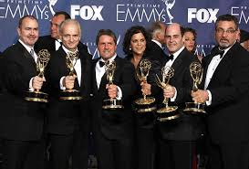
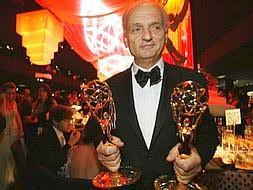
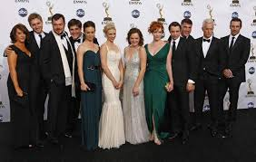

Premios
Repertorio de premios y nominaciones
Los Soprano ganó y fue nominado a varios premios durante el tiempo que estuvo en emisión. La serie fue nominada al Primetime Emmy a la mejor serie dramática en todos los años en los que fue elegible. Tras se nominada y perder el premio en 1999, 2000, 2001 y 2003 (la primera vez perdió ante The Practice, y las tres siguientes ocasiones el galardón se lo llevó The West Wing), Los Soprano se hicieron con el premio en 2004 y 2007. Su premio de 2004 significó la primera serie de televisión por cable que ganaba un premio, mientras que en 2007 fue la primera serie que ganó el premio, tras Upstairs, Downstairs en 1977, después de que la serie haya finalizado. En total recibió 21 nominaciones de los premios Primetime Emmy al mejor guion en una serie dramática, de los cuales ganó en seis ocasiones y David Chase, el creador, recibió tres premios.
La serie ganó, al menos, un premio por actuación en cada año que fue posible su nominación, excepto en 2006 y 2007. James Gandolfini y Edie Falco fueron nominados seis veces cada uno al mejor actor y mejor actriz en una en un serie dramática, respectivamente, ganando un total de tres premios. Joe Pantoliano ganó un premio al mejor actor de reparto en 2003, mientras que Michael Imperioli y Drea de Matteo hicieron lo propio en 2004 en la misma categoría. Otros actores que recibieron nominaciones a los Emmy fueron Lorraine Bracco (en las categorías de mejor actriz y mejor actriz de reparto), Dominic Chianese, Nancy Marchand, Aida Turturro, Steve Buscemi (quien fue nominado a la mejor dirección por "Pine Barrens"), Tim Daly, John Heard y Annabella Sciorra.
En 2000 y 2001, Los Soprano ganaron dos premios George Foster Peabody consecutivos. Sólo dos series lo habían hecho anteriormente: Doctor en Alaska y The West Wing. La serie recibió, también, varias nominaciones a los premios Globo de Oro (ganó el galardón de mejor serie dramática en 2000) y los principales premios de los sindicatos (directores, productores, guionistas y actores).